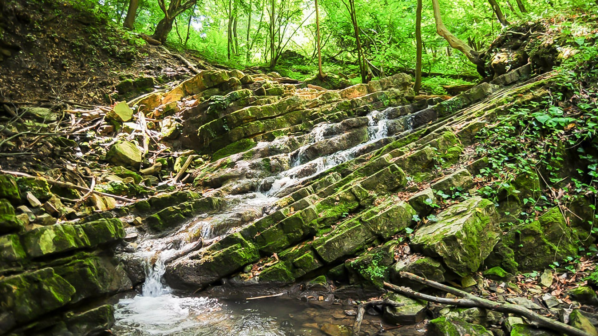
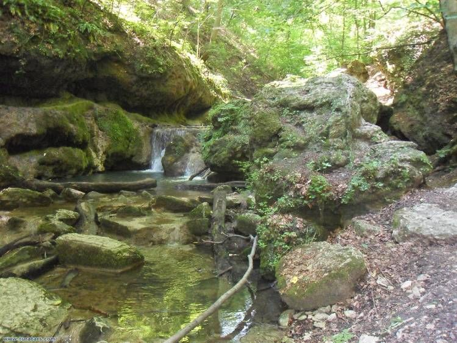
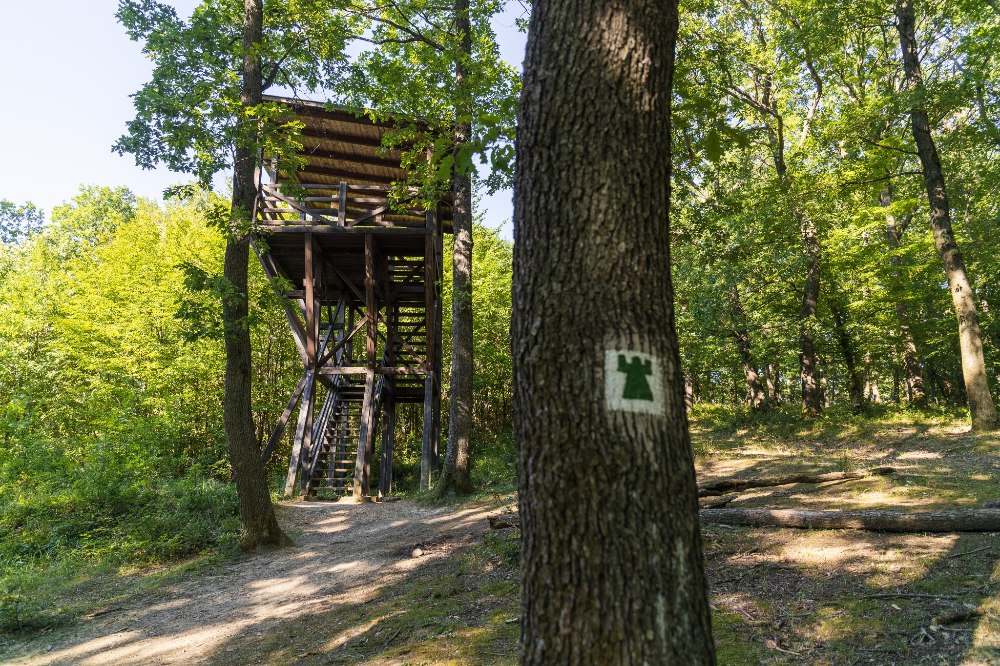
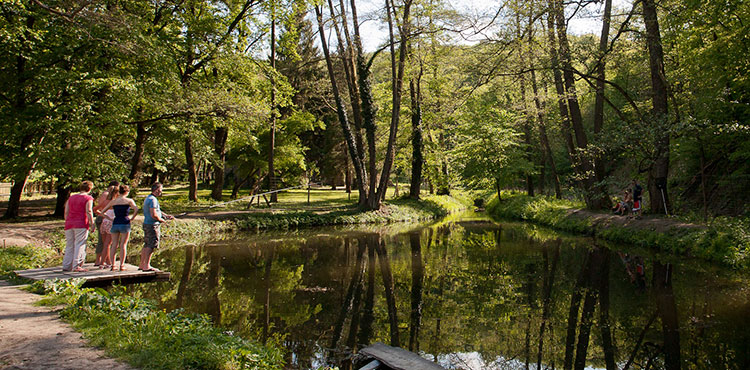
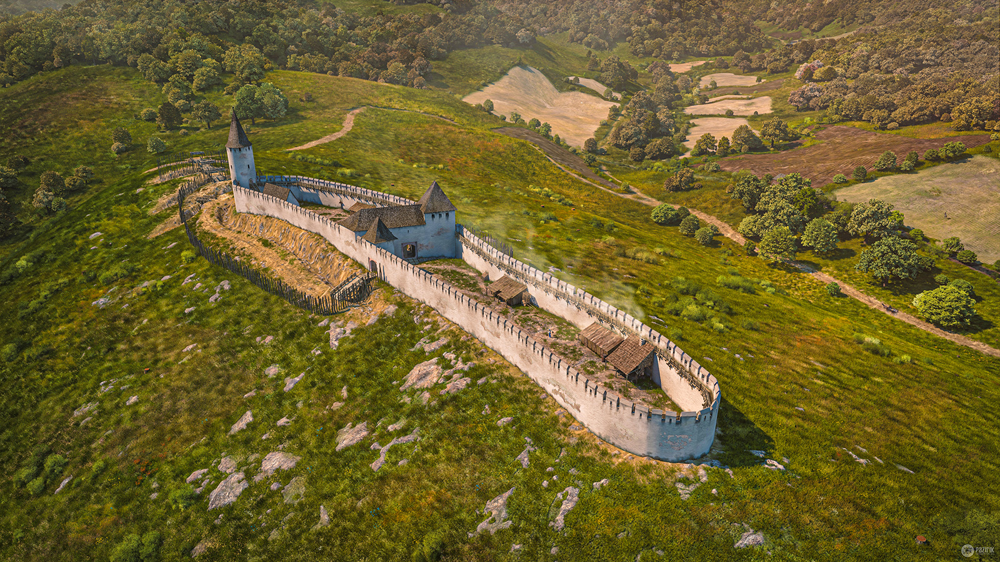

Elhelyezkdés:
A Mecsek középhegység a Dél-Dunántúlon, Pécstől északra. Legmagasabb csúcsa a 682 m-es Zengő
Túraútvonalak:
A Zengő (középkori nevén Vas-hegy) a Mecsek legmagasabb csúcsa. Pécstől északkeleti irányban, a Kelet-Mecsekben fekszik, magassága 682 méter, minden környékbeli túravonalnak a része, kihagyhatatlan látnivaló. A Zengő csúcsán kis beton kilátótorony található, attól alig száz méterre látszanak a Zengővár romjai, amelyeket a környékbeliek Miklós-vár néven is emlegetnek. A kilátótornyot a nyolcvanas években mérőtoronynak építették, nem sokkal utána azonban a turisták előtt is megnyitották.
Az Abaligeti-barlang a Mecsek leghosszabb patakos barlangja, amely1982 óta fokozottan védett természeti érték. Bár az emberi szem számára nem látható, de a víz eróziós hatására a cseppkőbarlang folyamatosan változik. A barlang főága 466 méter hosszú, gyalogosan, utcai ruhában is bejárható. Van még három, nehezen járható mellékága is. Az állandó 12,6 fokos levegője és a magas 97 százalékos páratartalom gyógyhatású, a pormentes levegő a légúti, allergiás, asztmás megbetegedéseket enyhítheti. Évtizedek óta kezelnek itt embereket, 2000-ben nyilvánították gyógybarlangnak. A barlangot az óránként induló vezetéssel lehet megtekinteni. Nem igazi cseppkőbarlang, bár van néhány cseppkőalakzat is, érdekessé a sziklafalakon található változatos oldásformák teszik.
Óbányai Völgy
Az Óbánya és Kisújbánya között húzódó völgy a Keleti-Mecsek legismertebb és egyik legszebb patakos völgye. A bővizű patak kisebb-nagyobb zuhatagokon, vízeséseken halad Mecseknádasd irányába. A völgyben olyan természeti csodákat láthatunk, mint a Ferde-vízesés vagy a Csepegő szikla. Ferde vízesés A Keleti-Mecsek látványos zúgója, a Tündér-lépcső, vagy közismert nevén a Ferde-vízesés. A vízesés lépcsős szerkezetű, 10 – 25 cm magas lépcsői az alapkőzet jura kori rétegei, melyeket tektonikus erők mozdítottak ki vízszintes helyzetükből. Ezen a helyen a kibillent pados mészkőrétegeken ferdén, félig folyva, félig vízesésszerűen átbukva rohan keresztül a kis patak vize

A megbillent mészkőrétegen alázúduló víztömeg felejthetetlen élménnyel ajándékozza meg az erre járókat. A vízeséstől jobbra található a Csepegő szikla.
Csepegő szikla
A völgy egyik különleges látványossága a Csepegő szikla, ami voltaképpen egy apró cseppkőbarlang. A nagyjából 30 méter hosszú mésztufa lerakódás 4-6 méterrel a völgytalp felett található. A Csepegő szikla egy ritka természeti látványosságot jelentő vízmegjelenési hely. Az egymáshoz közeli források számát nem lehet egyértelműen meghatározni

A vízmegjelenés az év minden időszakában tapasztalható. A szikla körül a mederben hatalmas forrásmészkő tömbök láthatók. A látványt óriási sziklatömbök és kéken csillogó meder teszi igazán lenyűgözővé.
Óbányai kilátó
Az Óbányai kilátó egy kétszintes fából készült kilátó, melyet Óbánya és Mecseknádasd közösen építtetett. A 2009-ben átadott kilátó a településtől dél-keletre lévő egyik magaslaton áll

A kilátóból szép kilátás nyílik a Óbányára és a közeli hegyekre
Pisztrángos tavak
Ha Óbányán járunk mindenképp érdemes meglátogatni a pisztrángos tavakat. Az Óbányai Pisztrángos tavak a település végén találhatóak, melyekbe sebes pisztrángot telepítettek. A két tó még jobban erősíti a környékre jellemző alpesi hangulatot. A tavak mellett látható Skóciai Szent Margit szobra, valamint itt halad el a Kisújbányára vezető turistaút.
Börzsöny Kisvasút
Ha a Börzsöny Kisvasúttal szeretnétek utazni, felfedezhetitek Szob és Márianosztra környékét, de érdemes minden kirándulás előtt telefonon tájékozódni arról, hogy hogyan alakulnak a menetrendek. A vonalat 1912-ben építették a márianosztrai kőbányában található andezit kőzet szállítására. (Útvonal: Szob – Máriakút – Márianosztra, információ: 06-20/203-7660) Börzsöny Közérdekű Muzeális Gyűjtemény Szobon keressétek fel a Börzsöny Közérdekű Muzeális Gyűjteményt (Börzsöny Múzeum), amely állandó és időszaki kiállításoknak ad helyet. Ősállatok maradványai is ki vannak állítva a gyűjteményben, meg lehet nézni a 80 millió évvel ezelőtti tengerben élő őrlőfogú halak, és cápák fogát, a mamut kövületeket, a csontokat, fogakat és az állkapcsot, és a valamikor itt hullámzó tengerből megmaradt több millió éves kagylókat is. Az egyik mamutmaradvány homoktermelés közben került elő, a kagylók és korallok a zebegényi bányából érkeztek. Szintén érdekesek a bronzkori urnák, melyek Szobról kerültek elő. Ne hagyjátok ki!
Réka vár
A Réka vár maradványai a Óbányai völgy és a Réka völgy elágazásában lévő kúpon találhatóak. A maradványok körülbelül 200 méter hosszan 36 méter szélesen terülnek el. A várudvart terméskőből rakott, 3 méter vastag és 415 méter hosszú fal övezte, melyből helyenként ma is 1 méter magas szakaszok állnak. A külső vár oldalán egy többszintes toronyépület állt.
Fehérek temploma
Ha a környéken utazgattok, térjetek be a váci Fehérek templomába, amely a fehér ruhát viselő domonkos rendi szerzetesek után kapta nevét. A templom belsejében a főoltár érdemli a legnagyobb figyelmet, a Mária mennybemenetelét ábrázoló kép alatt V. Pius pápát láthatjuk, amint a törökök elleni csata sikeréért imádkozik. A templomhoz két kripta is tartozott, a díszes fakoporsókra festett évszámok szerint a kriptákban 1731 és 1808 között temetkeztek. Hatalmas figyelem övezte 1994-ben a 264 természetes úton mumifikálódott emberi maradvány, valamint egy 40 személy maradványait őrző osszárium láda megtalálását. A lelet együttes néhány darabját, számos koporsót és kegytárgyat a Memento Mori című kiállításon, Vácon a Március 15. tér 19. szám alatt tekinthetitek meg.
Élővilág:
A flórához hasonlóan a Mecsek-hegység állatföldrajzi szempontból is önálló faunajárásba, a Sopianicumba tartozik. Jellemzőek rá a délies, melegkedvelő faunaelemek, de az északi oldalak, hűvös patakvölgyek sokszor hegyvidéki fajokat rejtenek. A terület zoológia jellemzése szempontjából a több ezer előforduló és a több száz védett faj közül célszerű az unikálisak (ritkák) és a hegységre igazán jellemzőek kiemelése. Fokozott védettséget 21 állatfaj élvez a Mecsek területén, de előfordulnak endemikus (bennszülött) fajok is, amelyek csak védettek vagy esetleg még jogszabályi oltalomban sem részesültek. A Mecsek egyik sajátos élőhely típusában, a barlangokban és azok vízfolyásaiban érdekes állatvilág figyelhető meg. A már említett Gebhardt Antal kutatásai során csak a Mecsekre jellemző állatfajok is előkerültek. Reliktum (jégkorszak előtti) faj az Abaligeti-barlang patakjának vizében élő vakbolharák, bennszülött fajok pedig a csak ebben a barlangban és a Mánfai-Kőlyukban élő különféle csiga- és százlábú-félék. A puhatestűek érdekes képviselője a hegységben megtalálható két védett csigafaj, a magyar vakcsiga és a keleti ajtóscsiga. A rákok osztályából a nem védett folyami rákkal az orfűi tavaknál és a Réka-völgy tiszta vizű Halász-patakjában találkozhatunk. A szitakötők rendjének egy jelenleg már védett, nagy termetű faj a legritkább képviselője. A sárgasávos hegyi szitakötő eddig csak a Melegmány-völgyből és Zobákpuszta mellől került elő az országból.